Befinden sich Einsteigöffnungen von Schächten oder Kanälen im Gefahrbereich des fließenden Straßenverkehrs und sind dort Tätigkeiten zu verrichten, hat der Unternehmer Warnkleidung zur Verfügung zu stellen. Die Versicherten haben diese bestimmungsgemäß zu benutzen.
Für das zur Verfügung stellen von persönlichen Schutzausrüstungen (PSA) seitens des Unternehmens und die Verpflichtung der Versicherten, die zur Verfügung gestellten persönlichen Schutzausrüstungen zu tragen, siehe auch §§ 29 und 30 der Unfallverhütungsvorschrift "Grundsätze der Prävention" (BGV/GUV-V A1).
Der Unternehmer hat dafür zu sorgen, dass geöffnete Schacht- oder Kanaleinstiege ständig durch Absperrgitter oder durch mindestens eine Person mit Warnfahne gesichert sind.
Die Sicherung durch eine Person mit Warnfahne ist insbesondere während der Baustelleneinrichtung sinnvoll.
Eine zusätzliche Sicherung der Einsteigöffnungen gegen Absturz durch Abdeckgitter ist empfehlenswert.Der Unternehmer hat dafür zu sorgen, dass bei Arbeiten in Schächten und Kanälen die Einstiege in Verkehrsbereichen durch Absperrungen und Verkehrszeichen entsprechend den örtlichen Verhältnissen und der Dauer der Arbeiten gesichert sind.
| • | Park- und Halteverbote, |
| • | Geschwindigkeitsbeschränkungen, |
| • | Vorfahrtsregelungen. |
| • | den Richtlinien für die Sicherung von Arbeitsstellen an Straßen (RSA), |
| • | dem Merkblatt für die verkehrstechnische Sicherung von Arbeitsstellen auf Straßen, |
| • | der Unfallverhütungsvorschrift "Arbeiten im Bereich von Gleisen" (BGV/GUV-V D33), |
Für derartige Absicherungen ist eine Absprache und Genehmigung mit bzw. von der zuständigen Straßenverkehrsbehörde erforderlich; siehe § 45 Abs. 6 der Straßenverkehrsordnung (StVO).
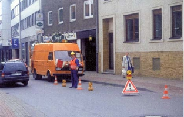
Bild 7: Sicherung von Einsteigöffnungen im öffentlichen Straßenverkehr
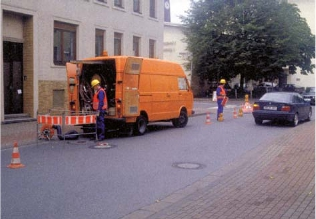
Bild 8: Mit Absperrgitter gesicherter Schachteinstieg
Entsprechend den örtlichen Verhältnissen wird der fließende Straßenverkehr gegebenenfalls durch Richtungspfeile links oder rechts am Fahrzeug vorbeigeleitet. Das Verkehrszeichen kann in geeigneter Weise an der Rückfront des Fahrzeuges befestigt werden.
Bei unübersichtlichen Verkehrsverhältnissen empfiehlt sich die zusätzliche Verwendung von Verkehrsleitregeln; siehe hierzu auch die Richtlinien für die Sicherung von Arbeitsstellen an Straßen (RSA).Der Unternehmer hat für ein sicheres Bedienen, Instandhalten und Erweitern von Anlagen geeignete feste Einrichtungen vorzusehen.
| • | Treppen, |
| • | Steigleitern, |
| • | fest angebrachte Bühnen, |
| • | Befestigungspunkte für Hilfsgeräte, z.B. Hebezeuge, |
| • | ausreichende räumliche Gegebenheiten, wie für Armaturenwechsel, Filterwechsel oder bei Werkstoffprüfungen, |
| • | bauseitiges Festlegen ausreichender Transportwege für den Normalbetrieb. |
Auf die sichere Begehbarkeit von Verkehrswegen, z.B. in Schächten und Kanälen, wird hingewiesen. Siehe hierzu auch Abschnitt 1.8 "Verkehrswege" des Anhanges zu § 3 Abs. 1 der Arbeitsstättenverordnung und Arbeitsstätten-Richtlinien ASR 17/1,2 "Verkehrswege".
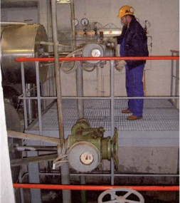
Bild 9: Fest angebrachte Bühne zum sicheren Bedienen und zur Instandhaltung
Sind Einrichtungen nach Abschnitt 5.2.1 nicht fest installierbar, müssen die Arbeiten unter Berücksichtigung der jeweiligen Gefährdungen durchgeführt werden.
| • | Örtlich aufgebaute Gerüste, |
| • | Fahrgerüste, |
| • | fahrbare Bühnen, |
| • | verschiebbare Übergänge. |
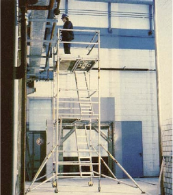
Bild 10: Fahrgerüst zur Instandhaltung
| • | Mangelnde Tragfähigkeit von Boden oder Decke, |
| • | unebene Auflagen. |
Der Unternehmer hat abhängig von den durchzuführenden Arbeiten und den örtlichen Verhältnissen geeignete Rettungseinrichtungen in ausreichender Zahl und leicht erreichbar bereitzustellen. Er hat dafür zu sorgen, dass die Versicherten mit der Handhabung der Rettungseinrichtungen vertraut sind.
Die Maßnahmen der Rettung bzw. Rettungseinleitung und die Bereitstellung der Rettungseinrichtungen sind in den entsprechenden Betriebsanweisungen aufzuführen und sollten Bestandteil der regelmäßigen Unterweisungen sein; siehe Abschnitt 4.3 "Betriebsanweisungen" und Abschnitt 4.4 "Unterweisungen".
Zur Rettung aus Schächten und Kanälen können z.B. folgende Einrichtungen erforderlich sein:| • | Von der Umgebungsatmosphäre unabhängig wirkende Atemschutzgeräte (Isoliergeräte), |
| • | persönliche Schutzausrüstungen gegen Absturz sowie zum Halten und Retten, |
| • | Tragsäcke, Tragwannen, Tragen, Dreiböcke mit Hebeeinrichtungen, Krane. |
Siehe auch Regeln "Benutzung von Atemschutzgeräten" (BGR/GUV-R 190), "Einsatz von persönlichen Schutzausrüstungen gegen Absturz" (BGR/GUV-R 198) und "Benutzung von persönlichen Schutzausrüstungen zum Retten aus Höhen und Tiefen" (BGR/GUV-R 199).
Zur Unterstützung der Rettungsmaßnahmen kann eine zusätzliche technische Lüftung sinnvoll sein, auch um die örtliche Umgebungstemperatur, z.B. im Schacht oder Kanal, abzusenken.Sind für die Rettung örtliche Rettungsdienste beauftragt worden, hat sich die für die Einhaltung der Schutzmaßnahmen zuständige Person vor Aufnahme der Arbeiten über die schnelle Benachrichtigungsmöglichkeit der Rettungsmannschaft zu informieren.
Örtliche Rettungsdienste können z.B. die Feuerwehren sein.
Die zuständige Person zur Einhaltung der Schutzmaßnahmen vor Aufnahme der Arbeiten kann z.B. über das Freigabeverfahren nach Abschnitt 4.6 bestimmt werden. Sie kann sowohl der Anlagenverantwortliche, der Arbeitsverantwortliche als auch die Aufsicht sein, je nachdem wie die Verantwortungsbereiche vor Ort geregelt sind.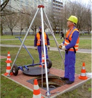
Bild 11: Dreibock mit Hebeeinrichtung
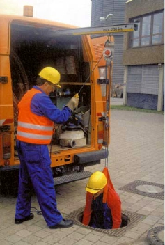
Bild 12: Kragarm mit Hebeeinrichtung
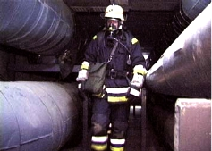
Bild 13: Personenrettung durch Feuerwehr
Gitterroste sind regelmäßig, mindestens einmal jährlich, auf ordnungsgemäßen Zustand zu prüfen.
Gitterroste dürfen nur mit Zustimmung des Anlagenverantwortlichen für die Dauer der Arbeiten entfernt werden.
Bestehen Absturzgefahren durch entfernte oder unbefestigte Gitterroste, sind Gefahrbereiche durch Absperrungen zu sichern.
Der Arbeitsverantwortliche hat zu veranlassen, dass Gitterroste unmittelbar nach dem Einbau gegen Verschieben und erforderlichenfalls gegen Herausheben gesichert werden.
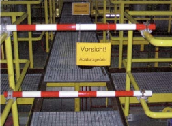
Bild 14: Gesicherte Absturzstelle
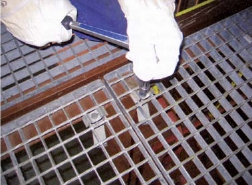
Bild 15: Gesicherte Gitterroste
Abschnitt 5.4.1 gilt nicht für Gitterroste zur Pumpensumpfabdeckung in Schächten und Kanälen, die nicht mindestens einmal jährlich begangen werden. Diese Gitterroste sind bei der nächsten Begehung auf ordnungsgemäßen Zustand zu prüfen.
Der Unternehmer hat dafür zu sorgen, dass bei der Auswahl, Anordnung und Verwendung ortsfester oder ortsveränderlicher elektrischer Betriebsmittel in Schächten oder Kanälen Schutzmaßnahmen gegen elektrische Gefährdung getroffen werden.
Bei der Auswahl der Betriebsmittel sind äußere Einflüsse, insbesondere erhöhte Umgebungstemperaturen, zu berücksichtigen (siehe DIN VDE 0100, u.a. Teil 510 und 520). Die ortsfesten elektrischen Betriebsmittel werden unter Anwendung der Schutzmaßnahmen nach DIN VDE 0100-410 erstellt und betrieben.
In der Regel fallen Schächte und Kanäle nicht unter die VDE 0100-706 (Anforderungen für Betriebsstätten, Räume und Anlagen besonderer Art – "Leitfähige Bereiche mit begrenzter Bewegungsfreiheit" – ), wobei die Regel die Ausnahme nicht ausschließt.
Es ist ein zusätzlicher Schutzpotenzialausgleich aller leitfähigen Teile zu schaffen. Steckdosen sind außerhalb von Schächten (bei Kanälen nach technischer Möglichkeit) anzuordnen und in Stromkreisen mit IN ≤ 32 A durch Fehlerstrom-Schutzeinrichtungen mit IΔN ≤ 30mA zu schützen. Für diese Steckdosen ist auch ein IT-Netz mit Isolationsüberwachung zulässig.
Ortsveränderliche Elektrische Betriebsmittel dürfen nur unter Verwendung einer der folgenden Schutzmaßnahmen nach VDE 0100-706 Abschnitt 706.410.3.10 a) und b) betrieben werden:
Handgehaltene Werkzeuge und tragbare Betriebsmittel| • | Schutz durch Kleinspannung SELV (safety extra low voltage), |
| • | Schutztrennung mit der Versorgung nur eines elektrischen Verbrauchsmittels über eine Sekundärwicklung des Trenntransformators. |
Handgehaltene Leuchten dürfen nur mit Schutzkleinspannung SELV (Kennzeichnung) betrieben werden.
Als Stromschweißquelle sind solche mit der Kennzeichnung "S" (Gleichstrom Scheitelwert 113 V / Wechselstrom 48 V Effektivwert) zu verwenden (frühere Kennzeichnung "42V" und "K"). Siehe auch Kapitel 3.22 Schweißstromquellen der Regel "Maßnahmen zur Verhütung von Gefahren für Leben und Gesundheit bei der Arbeit" (BGR/GUV-R 500).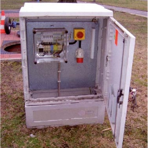
Bild 16: Speisepunkt außerhalb des Schachtes
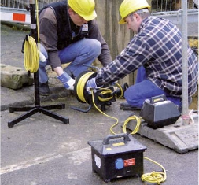
Bild 17: Schutztrennung und Schutzkleinspannung
Abschnitt 5.5.1 gilt nicht für elektrisch angetriebene, ortsveränderliche Pumpen, wenn sich während des Betriebes keine Person im Schacht oder Kanal befindet, weil damit eine erhöhte elektrische Gefährdung ausgeschlossen ist.
Arbeiten an Anlagenteilen, die unter Druck stehen oder heißes Medium führen, dürfen nicht durchgeführt werden, wenn dabei mit einem gefährdenden Ausströmen zu rechnen ist, es sei denn, ein Freigabeverfahren nach Abschnitt 4.6 wurde vorher durchgeführt.
| • | Entlüftung, |
| • | Entleerung, |
| • | Herstellung der Druckfreiheit, |
| • | Probenahme |
| • | Reinigung, |
| • | Prüfung und Messung |
Das Freigabeverfahren nach Abschnitt 4.6 beinhaltet hierbei entweder eine Freischaltung nach den Abschnitten 5.6.2 bis 5.6.4 oder andere Verfahren nach Abschnitt 5.6.5.
Ein Freigabeverfahren ist nicht erforderlich für das Nachziehen und Lockern von Rohrverbindungen, wenn diese Arbeiten von besonders befähigten Personen mit orts- und anlagenspezifischen Kenntnissen mit den dazu bestimmten Werkzeugen ausgeführt werden.
Durch eine entsprechende Gefährdungsbeurteilung und Betriebsanweisung ist die Festlegung des Abschnittes 5.6.1 sicherzustellen.
Zu besonders befähigten Personen siehe auch Abschnitt 4.5.1.
Die Instandhaltung wird nach DIN EN 13306 "Begriffe der Instandhaltung" und DIN 31051 "Grundlagen der Instandhaltung" im Wesentlichen unterteilt in Inspektion, Wartung und Instandsetzung. Diese Arbeiten an Anlagenteilen sind wie folgt einzuordnen:
Inspektion
Inspektion im Sinne dieser Regel ist die Sicht- und Funktionskontrolle der Fernwärmeverteilungsanlagen mit allen Anlagenteilen.
Im Rahmen von Inspektionen dürfen nur Arbeiten ausgeführt werden, bei denen ein Austritt des Heizmediums nicht zu erwarten ist.
Wartung
Wartung im Sinne dieser Regel ist das Erhalten der Funktionsfähigkeit der Fernwärmeverteilungsanlagen mit allen ihren Anlagenteilen, z.B. Entlüften von Rohrleitungen, Abschmieren von Armaturen, Ausbessern von Farbanstrichen, Reinigungsarbeiten.
Bei Wartungsarbeiten darf kein Heizmedium unkontrolliert freigesetzt werden.
Soll Heizmedium kontrolliert abgelassen werden, ist dafür zu sorgen, dass das Heizmedium so abgeführt wird, dass auch bei Versagen einer Armatur eine Gefährdung mit Sicherheit ausgeschlossen ist. Dies kann z.B. dadurch erfolgen, dass das Heizmedium durch geeignete Schläuche oder transportable Rohrleitungen aus dem Schacht oder Kanal geleitet wird. Schläuche sind gegen ungewollte Bewegungen, vor allem gegen das Zurückrutschen in den Schacht oder Kanal, zu sichern. Das gilt besonders beim Öffnen von Entleerungsarmaturen, da es beim Lösen von Verstopfungen zu einem schlagartigen Austritt des Heizmediums kommen kann. Bei entsprechenden Wassertemperaturen und –drücken ist die Verdampfung, siehe Bild 19 "Dampfdruckkurve für Wasser (H2O)", zu berücksichtigen.
Geeignete Schläuche müssen druck- und temperaturbeständig sein, z.B. Metallschläuche. Das Gangbarmachen von Entleerungs- und Entlüftungsarmaturen, z.B. durch Nachschmieren, darf nur erfolgen, wenn Vorsorge getroffen ist, dass das dabei austretende Heizmedium ohne Gefährdung aus dem Schacht oder Kanal abgeleitet wird oder für die Dauer der Arbeiten eine zusätzliche Absperrung montiert ist. Ist eine zusätzliche Armatur installiert worden, muss diese während der Arbeiten geschlossen sein.
Zusätzliche Absperrungen sind z.B. Armaturen und Blindflansche.
Zu Absperreinrichtungen siehe auch Abschnitt 5.11 "Absperreinrichtungen".
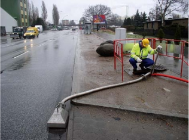
Bild 18: Kontrolliertes Freisetzen von Heizmedium über Metallschlauch
Instandsetzungsarbeiten dürfen nur nach vorherigen Außerbetriebnahmen oder entsprechender Freischaltung unter Berücksichtigung der Festlegungen nach Abschnitt 5.6 durchgeführt werden.
Vor Arbeitsbeginn ist die Temperatur des Wärmeträgers auf einen möglichst niedrigen Wert abzusenken. Eine schlagartige Verdampfung infolge Druck und Temperatur ist in jedem Fall auszuschließen (deutliche Überschreitung der Dampfdruckkurve für Wasser; siehe Bild 19).
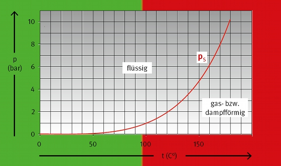
Bild 19: Dampfdruckkurve für Wasser (H2O)
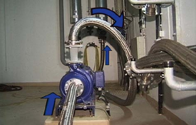
Bild 20: Entleerung durch angeflanschte Pumpe
Kann bei Dampfleitungen die Temperatur und der Druck nicht durch Schließen der Einspeisearmatur, z.B. an der Erzeugeranlage, und durch Wärmeabgabe (Kondensation) über die Verbraucheranlage abgebaut werden, ist der Dampf z.B. über Rohrleitungen oder geeignete Schlauchverbindungen gefahrlos und kontrolliert aus dem Schacht oder Kanal abzuleiten. Zum kontrollierten Abführen des Mediums siehe Erläuterungen zu Abschnitt 5.6.2.
Beim Einsatz von zwei oder mehr Unternehmen oder auch Betriebsabteilungen hat der Auftraggeber die Koordinierung der Arbeiten vorzunehmen; siehe § 8 Arbeitsschutzgesetz, §§ 5 und 6 der Unfallverhütungsvorschrift "Grundsätze der Prävention" (BGV/GUV-V A1) und § 3 der Baustellenverordnung.
Bei einer Erweiterung von Anlagen oder Anlagenteilen ohne vorherige Außerbetriebnahme gelten die Festlegungen nach Abschnitt 5.6 uneingeschränkt. Weitere Hinweise siehe Abschnitt 5.2.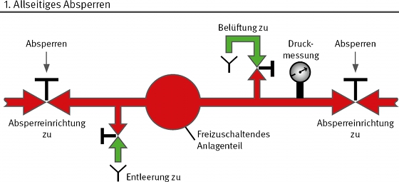
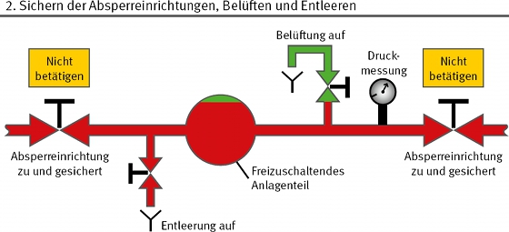
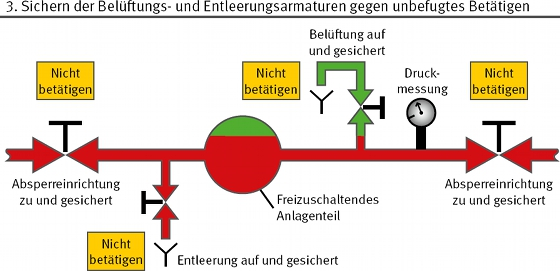
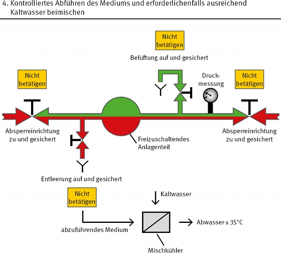
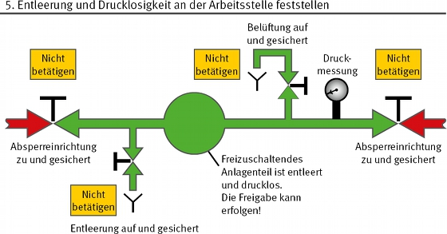
Bild 21: Die fünf Sicherheitsregeln zum Freischalten (siehe Abschnitt 5.6.2)
Im Rahmen des Freigabeverfahrens müssen die Anlagenteile, die unter Druck stehen oder heißes Medium führen, vor Beginn der Arbeiten durch folgende Sicherheitsmaßnahmen freigeschaltet werden:
| • | in geschlossenen nur durch Fachpersonal betretbaren Räumen und Bereichen, geschlossene Absperreinrichtungen und Armaturen mindestens mit den allgemeinen Verbotszeichen und einem Zusatzzeichen mit der Aufschrift |
| "Nicht öffnen es wird gearbeitet – Gefahr vorhanden – Entfernen nur durch – ....." | |
| gekennzeichnet sind; die Zeichen müssen der Unfallverhütungsvorschrift "Sicherheits- und Gesundheitsschutzkennzeichnung am Arbeitsplatz" (BGV/GUV-V A8) entsprechen, | |
| • | bei elektrisch betriebenen Absperreinrichtungen und Armaturen für die Dauer der Arbeiten das allgemeine Verbotszeichen an Schaltgriffen oder Antrieben von Schaltern, mit denen elektrisch freigeschaltet wurde, zuverlässig angebracht ist (siehe Unfallverhütungsvorschrift "Sicherheits- und Gesundheitsschutzkennzeichnung am Arbeitsplatz" [BGV/GUV-V A8] und DIN EN 50110-1/VDE 0105 Teil 1 "Betrieb von elektrischen Anlagen"), |
| • | in allgemein zugänglichen Räumen und Bereichen Absperreinrichtungen und Armaturen durch das Anbringen von Ketten und Schlössern oder durch das sichere Entfernen von Handrädern gesichert sind. |
Beim kontrollierten Abführen des Mediums ist der Umweltschutz zu beachten. Gegebenenfalls ist mit Kaltwasser abzukühlen, z.B. mittels Mischkühler. Die Vorschriften der für die Entwässerung örtlich zuständigen Behörden sind zu beachten.
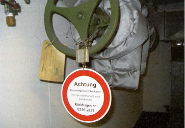
Bild 22: Gesicherte Armatur
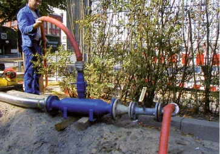
Bild 23: Abkühlen des Mediums mittels Mischkühler
Sind die Maßnahmen nach Abschnitt 5.6.2 nicht ausreichend, hat der Anlagenverantwortliche, in Abhängigkeit vom Anlagenteil, den Betriebsparametern und der durchzuführenden Arbeit, zusätzliche Sicherheitsmaßnahmen festzulegen.
| • | Arbeiten in Behältern, Rohrleitungen und engen Räumen, |
| • | Arbeiten an Dampfleitungen, |
| • | Arbeiten an Anlagenteilen, an denen eine Gefahr durch Nachverdampfung auf Grund der Aufheizung, z.B. ausgehend von benachbarten Anlagenteilen besteht. |
Zusätzliche Sicherheitsmaßnahmen können z.B. sein:
| • | Dicht abschließende, deutlich erkennbare Steckscheiben, wenn Abmessungen und Werkstoff den auftretenden Temperaturen, stofflichen Beanspruchungen und Drücken angepasst sind, |
| • | zwei hintereinander liegende Absperreinrichtungen, wenn zwischen diesen eine geeignete Zwischenentspannung hergestellt ist (Doppelabsperrung mit zwischenliegender Entlüftung). |
Beim Auftreten geringer Leckwassermengen hinter der Absperreinrichtung besteht auch die Möglichkeit, eine geeignete Ableitung zwischen Absperreinrichtung und Arbeitsort einzurichten, die ein gefahrloses Arbeiten und Ableiten des Mediums sicherstellt.
Die sich nach den Abschnitten 5.6.2 und 5.6.3 anschließenden Arbeiten beim Öffnen von Anlagenteilen sind in der folgenden Reihenfolge durchzuführen:
Abweichend von den Abschnitten 5.6.2 bis 5.6.4 dürfen auch andere Verfahren zum Einsatz kommen. Der Unternehmer hat dafür zu sorgen, dass bei der Anwendung dieser Verfahren durch technische, organisatorische und personenbezogene Sicherheitsmaßnahmen Gefährdungen von Personen ausgeschlossen werden. Ein Verfahren darf nur angewendet werden, wenn für das Verfahren und die verwendeten Arbeitsmittel eine gutachterliche Stellungnahme vorliegt, die die Eignung des Verfahrens und der eingesetzten Arbeitsmittel bestätigt.
Die ausgewählten und verwendeten Arbeitsmittel dieser Verfahren unterliegen der Betriebssicherheitsverordnung und sind in der Regel nach dem Geräte- und Produktsicherheitsgesetz (GPSG) zu kennzeichnen bzw. zu zertifizieren. In zu entscheidenden Einzelfällen kann eine Baumusterprüfung (bauartgeprüfte Arbeitsmittel) erforderlich sein.
Gutachterliche Stellungnahmen können verfasst werden z.B. von:| 1. | Sachverständigen der zugelassenen Überwachungsstellen (ZÜS) nach der Betriebssicherheitsverordnung sowie anderer vergleichbarer Stellen, |
| 2. | Sachverständigen eines Unternehmens und der öffentlich-rechtlichen Materialprüfanstalten (MPA), soweit sie behördlich für die Begutachtung der von diesem Unternehmen angewendeten Verfahren und die verwendeten Arbeitsmittel anerkannt sind, |
| 3. | der Berufsgenossenschaft anerkannten Sachverständigen, |
| 4. | vom AGFW benannten Fachleuten. |
Zu Nummer 3 siehe auch Grundsatz "Anerkennung von Sachverständigen für die Prüfung von Durchleitungsdruckbehältern (BGG 911).
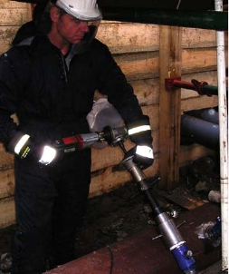
Bild 24: Anbohrverfahren
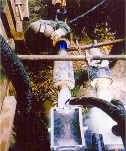
Bild 25: Rohrfrostverfahren
Zum Anbohr- und Rohrfrostverfahren siehe auch AGFW-Arbeitsblätter FW 432 "Betriebliche Mindestanforderungen an die Erstellung eines Rohrabzweigs an in Betrieb befindlichen Fernwärmeleitungen nach dem Anbohrverfahren" und FW 434 "Betriebliche Mindestanforderungen an die Erstellung eines lokalen Rohrverschlusses an in Betrieb befindlichen Fernwärmeleitungen nach dem Rohrfrostverfahren" sowie Information "Frosten von Fernwärmeleitungen" (BGI/GUV-I 5066) und Information "Anbohren von Fernwärmeleitungen" (BGI/GUV-I 5067).
Zu Schweißarbeiten siehe AGFW-Arbeitsblatt FW 446 Teil 2 "Schweißnähte an Fernwärmerohrleitungen aus Stahl; Schweißen und Prüfen"oder auch FW 432, Abschnitt 4.4 "Schweißen".
Bei Anwendung dieser AGFW-Arbeitsblätter sowie der BGIen gelten die Festlegungen des Abschnittes 5.6.5 als erfüllt.Der Unternehmer hat Anlagenteile so auszuwählen, aufzustellen und zu gestalten, dass ein sicheres Befahren und Arbeiten unter Berücksichtigung der Gefährdungen gewährleistet ist. Der Flucht- und Rettungsfall ist dabei zu berücksichtigen.
Eine schadstofffreie und trockene Atmosphäre in Schächten und Kanälen kann z.B. durch Be- und Entlüftungsrohre erreicht werden, deren Durchmesser mindestens 0,1 m für Schächte und 0,4 m für Kanäle betragen sollte. Aus konstruktiven Gründen ist möglichst ein Durchmesser von 0,15 m bei Schächten und 0,6 m bis 0,8 m bei Kanälen zu wählen.
Zur Anordnung von Be- und Entlüftungsrohren siehe Bilder 3a und 3b. Eine ausreichende freie (natürliche) Lüftung durch freie, natürliche Konvektion kann z.B. durch wiederholte Einzelfreimessungen oder kontinuierliche Freimessungen nachgewiesen werden.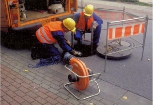
Bild 26: Technische Belüftung (siehe auch Bild 5)
Eine alternative technische Lüftung kann sowohl durch fest installierte als auch mobile Lüfter durchgeführt werden.
Blasende Lüftung am Schacht- oder Kanalboden ist der absaugenden Lüftung zur Unterstützung der freien Konvektion im Fernwärmebereich vorzuziehen.
Technische Be- und Entlüftungsmaßnahmen gelten bei Kanälen als wirksam, wenn mindestens ein Luftstrom von 600 m³/h und m² Kanalquerschnitt gegeben ist (entspricht 1/6 m/s Luftgeschwindigkeit).
Technische Be- und Entlüftungsmaßnahmen gelten bei Schächten als wirksam, wenn mindestens ein sechsfacher Luftwechsel gegeben ist.
Für einen Musterschacht nach den Bildern 3a und 3b von ca. 18 m³ Raumvolumen ist also ein Austauschvolumen von mindestens 108 m³ erforderlich, d. h. ein Lüfter mit einem maximalen Volumenstrom von 1 200 m³/h benötigt hierfür rund fünf Minuten Lüftungszeit.
Zu Lüftung siehe auch § 10 der Unfallverhütungsvorschrift "Abwassertechnische Anlagen" (BGV/GUV-V C5).
Zu Be- und Entlüftungsmaßnahmen beim Befahren von Anlagenteilen siehe auch Abschnitt 5.8.4.
| • | die Unterkanten der Einsteigöffnung nicht höher als 0,5 m über der Zugangsebene liegen, |
| • | Einsteigöffnungen, hinter denen die nächste sichere Trittfläche mehr als 1 m unterhalb der Unterkante der Einsteigöffnung liegt, mit Anschlagpunkten für persönliche Schutzausrüstungen gegen Absturz versehen und gekennzeichnet sind, |
| • | Deckel von Einsteigöffnungen so geführt und befestigt sind, dass Gefährdungen beim Öffnen und Schließen verhindert werden, |
| • | an Absturzkanten oder stark geneigten Wänden Absturzsicherungen oder Vorrichtungen zum Aufnehmen von Absturzsicherungen vorhanden sind. |
Die Kennzeichnung hinsichtlich bestehender Absturzgefahren sollte durch ein Warnzeichen (W15) in Verbindung mit einem Zusatzzeichen mit der Aufschrift "Absturzgefahr" erfolgen. Zur Kennzeichnung siehe Unfallverhütungsvorschrift "Sicherheits- und Gesundheitsschutzkennzeichnung am Arbeitsplatz" (BGV/GUV-V A8).
Die lichte Weite von Einsteigöffnungen muss mindestens 0,8 m betragen.
Bei Einsteigöffnungen größer gleich 0,8 m ist der Flucht- und Rettungsfall ausreichend berücksichtigt.
Schacht- und Kanaleinstiege sollten konstruktiv so ausgeführt und angeordnet werden, dass möglichst wenig Oberflächenwasser in Schächte und Kanäle eindringen kann. Einstiege im Bereich von Rinnsteinen sind zu vermeiden. Bei Schächten und Kanälen im Fahrbahnbereich sind die Einstiege möglichst in Zonen mit geringem Verkehrsaufkommen zu legen. Siehe auch § 5 Abs. 13 der Unfallverhütungsvorschrift "Abwassertechnische Anlagen" (BGV/ GUV-V C5).Abweichend von Abschnitt 5.7.2 sind in Ausnahmefällen unter besonderen anlagenspezifischen Voraussetzungen Einsteigöffnungen mit einer lichten Weite von mindestens 0,6 m zulässig.
| • | Konstruktive Vorgaben bei Behältern, |
| • | Verkehrsführungen mit hohen Verkehrslasten, |
| • | Vorhandensein von anderen Versorgungseinrichtungen. |
Bei Einsteigöffnungen kleiner 0,8 m ist davon auszugehen, dass die Möglichkeiten im Flucht- und Rettungsfall wesentlich eingeschränkt sind. Durch besondere Maßnahmen kann die gleiche Sicherheit auf andere Weise gewährleistet werden, z.B. weitere entsprechend größere Einstiege oder ausreichende Erweiterung der vorhandenen Einsteigöffnungen durch eine schnell ausbaubare Leiter oder sonstige Einsteigvorrichtungen.
Siehe auch § 5 Abs. 14 der Unfallverhütungsvorschrift "Abwassertechnische Anlagen" (BGV/GUV-V C5).Einsteigöffnungen sind mit zugehörigen Einsteighilfen auszurüsten. Für Schächte und Kanäle sind zum Ein- und Aussteigen mindestens fest installierte Leitern oder in Ausnahmefällen Steigeisen vorzusehen. In den Einsteigbereich dürfen keine baulichen Einrichtungen hineinragen.
Ausnahmen sind, wenn aus zwingenden konstruktiven Gründen eine fest installierte Leiter nicht eingebaut werden kann. Die Gründe sind zu dokumentieren und über eine Gefährdungsbeurteilung ist sicherzustellen, dass die gleiche Sicherheit auf andere Weise erreicht wird.
Werden in Ausnahmefällen Steigeisen eingebaut, müssen diese der Regel "Steiggänge für Behälter und umschlossene Räume" (BGR/GUV-R 177) entsprechen.
Grundsätzlich hat der Abstand von der Vorderkante der Einsteigleiter bzw. des Steigeisens bis zu festen Bauteilen oder fest angebrachten Gegenständen auf der begehbaren Seite mindestens 0,65 m zu betragen.
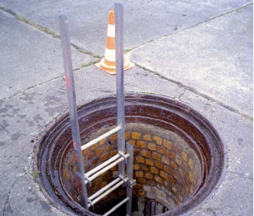
Bild 27: Einsteighilfe
Die Fußraumtiefe muss mindestens 0,15 m sein; siehe Abschnitt 5.4 der Arbeitsstätten-Richtlinie ASR 20 "Steigeisengänge und Steigleitern" und Regel "Steiggänge für Behälter und umschlossene Räume" (BGR/GUV-R 177).
Bauliche Einrichtungen können z.B. Mauervorsprünge, Armaturen, Rohrleitungen und Spindeln sein.Bei Einsteigtiefen von mehr als 5 m Absturzhöhe müssen Einrichtungen zum Schutz gegen Absturz von Personen vorhanden sein. Bei Einsteigtiefen von mehr als 10 m Absturzhöhe sind Ruhebühnen erforderlich.
Wird durch den Rückenschutz die Rettung einer Person erschwert oder das Ein- und Ausbringen von Bauteilen verhindert, sind andere Absturzsicherungen oder eine zweite entsprechende Einsteigöffnung vorzusehen.
Ruhebühnen werden auch als Zwischenpodeste bezeichnet.In Schächten und Kanälen ist eine Arbeitsfläche von mindestens 1,5 m² einzuhalten. Die Arbeitsfläche darf an keiner Stelle weniger als 1 m breit sein. Eine Unterschreitung der Mindestmaße ist nur in begründeten Einzelfällen zulässig. In die Arbeitsfläche dürfen keine baulichen Einrichtungen hineinragen.
Ein Unterschreiten der Mindestmaße ist nur dann in begründeten Einzelfällen zulässig, wenn z.B. kurzzeitige Kontroll- und Bedienungstätigkeiten auszuführen sind, bei denen eine Gefährdung ausgeschlossen werden kann. Im Einzelfall ist auf Grund der Art und der zu erwartenden Dauer der Tätigkeit zu entscheiden, welche Mindestmaße eingehalten werden müssen, um eine Gefährdung auszuschließen.
Bauliche Einrichtungen können z.B. Mauervorsprünge, Armaturen, Rohrleitungen und Spindeln sein.Bedienungsgänge müssen eine uneingeschränkte Breite von mindestens 0,5 m aufweisen. Ist eine Gefährdung auszuschließen, kann in Sonderfällen zur Bedienung von Einzelarmaturen der Mindestabstand an Engstellen auf 0,4 m reduziert werden.
Die uneingeschränkte Durchgangshöhe in Schächten und Kanälen darf nicht weniger als 1,8 m betragen. Für die Wege, die nur der Bedienung und Überwachung einzelner Armaturen außerhalb der Arbeitsfläche dienen, darf die Durchgangshöhe geringer sein, jedoch darf sie 1,4 m an keiner Stelle bei einer Mindestbreite von 0,5 m unterschreiten.
Die Bedienungshöhe der Armaturen darf nicht mehr als 1,8 m betragen und die Bedienungselemente sind so anzuordnen, dass sie von der Arbeitsfläche aus gut erreichbar sind.
Der Schacht- und Kanalboden ist mit einem Pumpensumpf zu versehen, der zum Begehen ausreichend gesichert ist. Die Böden sind eben und mit einem allseitigen Gefälle zum Pumpensumpf zu erstellen.
Der Pumpensumpf kann auch so hinter der Einsteigleiter angeordnet sein, dass ein Hineintreten sicher verhindert und somit ein entsprechendes Gitterrost nicht erforderlich ist.
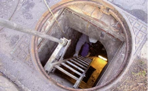
Bild 28: Sicherung des Pumpensumpfes durch Einsteigleiter
Der Unternehmer hat dafür zu sorgen, dass Arbeiten in Anlagenteilen unter Anwendung eines Freigabeverfahrens durchgeführt werden.
Der Unternehmer hat vor dem Beginn von Arbeiten dafür zu sorgen, dass die Zugangswege und Arbeitsbereiche in den Anlagenteilen abgegrenzt und ausreichend beleuchtet sind.
Der Unternehmer hat vor dem Beginn von Arbeiten in Anlagenteilen dafür zu sorgen, dass Schutzmaßnahmen gegen Absturzgefahren getroffen sind.
Soweit nicht anlagenseitig Geländer eingebaut sind, sind Absturzstellen im zu befahrenden Anlagenbereich durch feste Absperrungen zu sichern; siehe auch Erläuterungen zu Abschnitt 5.4.3. Dies gilt auch für Absturzstellen, die weniger als 2 m von der Grenze des zu befahrenden Anlagenbereichs entfernt sind. Sind Absturzstellen größer 2 m vom zu befahrenden Anlagenbereich entfernt, reicht die Abgrenzung durch Ketten und Sicherheitszeichen in mindestens 2 m Entfernung von der Absturzkante aus.
Zu Absturzhöhen siehe Arbeitsstätten-Richtlinie ASR 12/1-3 "Schutz gegen Absturz und herabfallende Gegenstände".Vor dem Beginn von Arbeiten und bei Arbeiten in Anlagenteilen hat der Unternehmer durch Be- und Entlüftungsmaßnahmen oder geeignete Freimessungen sicherzustellen, dass keine die Gesundheit gefährdende Atmosphäre vorhanden ist und entstehen kann.
Gefährdungen durch Stoffe können von außen eingebracht werden oder durch biologische Vorgänge, z.B. Gärung, Fäulnis, entstehen oder durch chemische Reaktionen, z.B. Korrosion, auftreten.
Unterirdische Mauer- oder Betonbauwerke sind in der Regel als nicht gasdicht anzunehmen, so dass von außen über das poröse Erdreich Schadstoffe durch Diffusion in das Bauwerk gelangen können.
Grundsätzlich sind bei nicht ständig be- und entlüfteten unterirdischen Bauwerken, wie Schächte und Kanäle, explosionsfähige oder gesundheitsschädigende Atmosphäre sowie Sauerstoffmangel nicht auszuschließen.
Explosionsfähige oder gesundheitsschädigende Atmosphäre sowie Sauerstoffmangel kann z.B. entstehen durch:| • | Faulgasbildung im Bauwerk oder benachbartem Erdreich, |
| • | in der Nähe befindliche Gasleitungen oder Lager für flüssige oder gasförmige Brennstoffe, |
| • | ungesättigtes Kohlendioxid (CO2) im Grundwasser oder Erdreich, |
| • | Lösungsmitteldämpfe aus Farbanstrichen, |
| • | thermische Zersetzungsprodukte von Kunststoffen und PUR-Schäumen der Wärmedämmung, |
| • | sauerstoffzehrende Korrosionsprozesse, |
| • | Kohlenmonoxid-(CO-)Einträge aus Fahrzeugen von benachbarten Tankstellen oder häufig befahrenen Straßenkreuzungen, |
| • | Schadstoffe von in der Nähe befindlichen Deponien. |
Eine Gefahr besteht auch bei der Verwendung von Brenngasen, z.B. durch Rauche und Gase bei Schweiß- und Isolierarbeiten.
Diese aufgeführten Gefährdungen sind in einer Gefährdungsbeurteilung zu berücksichtigen.
Kann bei Arbeiten in Anlagenteilen eine explosionsfähige, gesundheitsschädigende Atmosphäre oder Sauerstoffmangel, z.B. bei der Entlüftung von Rohrleitungen, entstehen, sind die geeigneten Freimessungen ständig zu wiederholen, sofern nicht durch Be- und Entlüftung sichergestellt ist, dass keine explosionsfähige Atmosphäre, keine gesundheitsschädliche Konzentration von Gasen, Nebeln, Dämpfen und Stäuben oder Sauerstoffmangel auftreten kann. Die Wirksamkeit der Be- und Entlüftung ist zu überwachen. Be- und Entlüftung kann durch natürliche oder technische Maßnahmen erfolgen; siehe auch Erläuterungen zu Abschnitt 5.7.1.
Die Bildung gefährlicher explosionsfähiger Atmosphäre ist verhindert, wenn die Konzentration an Gasen, Dämpfen, Nebeln oder Stäuben im Gemisch mit Luft 20% der unteren Explosionsgrenze (UEG) nicht überschreitet. Zu 20% UEG siehe auch DVGW-Arbeitsblatt G 110 "Ortsfeste Gaswarneinrichtungen".
Die Einwirkung gesundheitsschädlicher Stoffe gilt als verhindert, wenn z.B. die Arbeitsplatzgrenzwerte (AGW) nicht überschritten werden; siehe auch Erläuterungen zu Abschnitt 5.7.1.Wird bei Arbeiten in Anlagenteilen eine explosionsfähige, gesundheitsschädigende Atmosphäre oder Sauerstoffmangel festgestellt, haben die Beschäftigten die Anlagenteile sofort zu verlassen.
Diese Geräte sollten eine möglichst geringe Querempfindlichkeit, ein geringes Driftverhalten, eine geringe Einstellzeit (Gasreaktionszeit t90) und eine dem Temperatureinsatzbereich entsprechende Eignung haben.
Abhängig von der Art und Dauer der Arbeiten empfiehlt sich die ständige Überwachung durch tragbare Geräte, die im Gefahrfall automatische optische oder akustische Warnsignale geben. Über die ständige Überwachung hat nach den örtlichen Gegebenheiten und der Art der durchzuführenden Arbeiten der Verantwortliche vor Ort zu entscheiden.
Falls freigemessen wird, sollte mindestens| • | Methan (CH4), |
| • | Kohlendioxid (CO2) und |
| • | Sauerstoff (O2) |
Hinreichend genau bedeutet, dass die Messprinzipien hinsichtlich der Genauigkeit und Funktionsfähigkeit keine falsche Sicherheit vortäuschen. Freimessungen mit der Prüfröhrchenmethode, die eine Fehlergrenze bis zu ±20 % aufweisen können, sind z.B. denkbar ungeeignet.
Für die O2-Freimessungen ist eine vorherige Vergleichsmessung in der freien Atmosphäre außerhalb des Bauwerks sinnvoll.
Bei der Auswahl der Messgeräte sind die Einsatzbedingungen, wie Temperatur, Luftdruck und Feuchtigkeit, zu beachten. Je nach Messgerät können notwendige Kalibrierungen oder Nullpunktsabgleiche vor Ort und unter Einsatzbedingungen erforderlich sein.
Die geeigneten Freimessungen sind organisatorisch unter Berücksichtigung der Betriebsanleitungen der Messgerätehersteller durch Betriebsanweisungen (siehe Abschnitt 4.3) und Unterweisungen (siehe Abschnitt 4.4) sicherzustellen.Müssen Anlagenteile aus zwingenden Gründen auch dann begangen werden, wenn durch Be- und Entlüftungsmaßnahmen oder geeignete Freimessungen nicht sichergestellt ist, dass die Versicherten gegen die Einwirkungen von Gasen, Dämpfen, Nebeln und Stäuben oder Sauerstoffmangel ausreichend geschützt sind, hat der Unternehmer dafür zu sorgen, dass von der Umgebungsatmosphäre unabhängig wirkende Atemschutzgeräte benutzt werden.
Der Einsatz von Filtergeräten ist im Einzelfall nur zulässig, wenn ausschließlich Stäube auftreten können und kein Sauerstoffmangel besteht; siehe auch Erläuterungen zu Abschnitt 5.7.1.
Zum Einsatz von Atemschutzgeräten siehe Regel "Benutzung von Atemschutzgeräten" (BGR/GUV-R 190).
Atemschutzgeräte sind nach der vorstehend genannten Regel zu lagern, zu reinigen und instand zu halten.
Träger von Atemschutzgeräten sind nach dem Grundsatz "Berufsgenossenschaftliche arbeitsmedizinische Vorsorgeuntersuchungen, G 26 "Atemschutzgeräte" (BGG 904) zu untersuchen.Der Unternehmer hat dafür zu sorgen, dass das Befahren von Anlagenteilen mit erhöhtem Gefährdungspotenzial nur in Gegenwart einer zweiten, außerhalb der Anlage befindlichen und mit der Arbeit vertrauten Person erfolgt. Diese muss mit dem Hineinsteigenden jederzeit in Kontakt stehen und Rettungsmaßnahmen einleiten können.
Zu solchen Anlagenteilen gehören insbesondere Behälter und Schächte; in besonderen Einzelfällen können z.B. auch Druckerhöhungs-, Pump- und Hausstationen dazu zählen.
Ein erhöhtes Gefährdungspotenzial in Kanälen ist durch technische sowie organisatorische Sicherheitsmaßnahmen zu minimieren und in den entsprechenden Betriebsanweisungen zu berücksichtigen.
Für Schächte und Kanäle siehe auch Abschnitte 4.5.3 und 4.5.4.
Zum Befahren von Anlagenteilen mit erhöhtem Gefährdungspotenzial siehe auch Regel "Arbeiten in Behältern, Silos und engen Räumen" (BGR 117-1).Der Unternehmer hat dafür zu sorgen, dass das Füllen von Rohrleitungen, Anlagen oder Anlagenteilen erst dann vorgenommen wird, wenn er oder die zuständige verantwortliche Person die Rohrleitung, die Anlage oder den Anlagenteil freigegeben hat.
Zum Freigabeverfahren siehe Abschnitt 4.6.
Hinweise zum Füllen von Rohrleitungen, Anlagen und Anlagenteilen sind auch dem AGFW-Arbeitsblatt FW 430 "Übernahme, Inbetriebnahme und Außerbetriebnahme von Fernwärmeverteilungsanlagen" zu entnehmen.Der Unternehmer hat dafür zu sorgen, dass beim Füllen von Rohrleitungsabschnitten und gleichzeitigen Arbeiten an einem benachbarten noch leeren und drucklosen Rohrleitungsabschnitt, der nur durch eine Absperrarmatur abgetrennt ist, die Arbeiten so lange eingestellt werden, bis gewährleistet ist, dass diese gefahrlos ausgeführt werden können.
Der Unternehmer hat dafür zu sorgen, dass beim Füllen von Heizwasserleitungen alle Entleerungsarmaturen geschlossen werden und die an den Entlüftungsarmaturen austretenden Medien gefahrlos abgeführt werden.
Der Unternehmer hat dafür zu sorgen, dass vollständig entwässerte Dampfleitungen in möglichst kurzen Teilstrecken in Betrieb genommen werden. Er hat weiterhin dafür zu sorgen, dass über die Entwässerungsstellen anfallendes Kondensat gefahrlos abgeführt werden kann. Durch entsprechende Anfahrvorgänge ist sicherzustellen, dass ein Auftreten unkontrollierter Druckstöße vermieden wird.
Der Unternehmer hat sicherzustellen, dass Anlagenteile so ausgewählt und angeordnet sind, dass diese unter Berücksichtigung des bestimmungsgemäßen Betriebs und der Gefährdungen drucklos gemacht und entleert werden können.
| • | der Entleerungsvorgang beobachtbar und der Entspannungszustand überprüfbar ist, |
| • | die Anlagenteile so konstruiert oder untereinander verbunden und so eingebaut sind, dass sie abschnittsweise ohne Gefährdung drucklos gemacht und entleert werden können, |
| • | die Sicherheits- oder Entspannungseinrichtungen an geeigneten Orten eingebaut und Entleerungsleitungen vorhanden und so ausgeführt sind, dass die austretenden Medien zu keiner Gefährdung führen. |
Der Unternehmer hat Absperreinrichtungen so auszuwählen, dass Versicherte bei Arbeiten an oder in Anlagenteilen nicht durch austretende Medien gefährdet werden.
Sind für die Durchführung von Arbeiten Anlagenteile abzusperren, hat der Unternehmer die Absperreinrichtungen festzulegen, die ein Austreten von Medien in gefahrdrohender Menge in Arbeitsbereiche verhindern. Dabei müssen die Absperreinrichtungen im geschlossenen Zustand gegen unbeabsichtigtes Öffnen gesichert werden.
Stehen keine geeigneten Absperreinrichtungen zur Verfügung, sind die gefahrbringenden Anlagenteile drucklos und medienfrei zu machen.
Der Unternehmer hat dafür zu sorgen, dass der Sicherheit dienende Absperreinrichtungen in angemessenen Fristen auf Gängigkeit geprüft werden. Die Herstellerangaben sind dabei zu beachten.
| • | voneinander zu trennende Systeme, |
| • | Abgangs- und Umgehungsleitungen, |
| • | Leitungen mit unterschiedlichem Druckniveau. |
Angemessene Fristen bedeutet, dass der Unternehmer diese in Eigenverantwortung auf Grund der Bauart und Belastung solcher Absperreinrichtungen und unter Berücksichtigung von Herstellerangaben festzulegen hat. Sinnvoll ist es, bei jeder Inspektion und Wartung diese Absperreinrichtungen auf Gängigkeit zu prüfen.